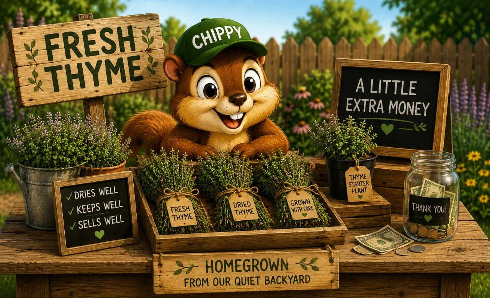

Can Thyme Make You a Little Extra Money?
Thyme does not get the attention basil gets. Nobody walks outside and says, “Look at this incredible thyme plant!” But thyme quietly becomes one of the most valuable herbs in the yard because it grows, survives, asks for almost nothing, and years later it is still sitting there doing its job.

Existing QBL illustrationBasil is the energetic overachiever. Thyme is the reliable employee.
Basil says, “Look how much I grew this week!” Thyme says, “I’ve been here for four years.” That is part of its appeal. Once established, thyme often becomes one of the easiest herbs you will ever grow.
Thyme is one of those herbs you stop noticing until you realize it has quietly been useful, productive, and low-drama for years.
The biggest mistake people make is loving it too much
Too much water. Too much fertilizer. Too much attention. Thyme likes conditions that many plants hate: well-drained soil, lots of sun, and occasional neglect. In many gardens, the less you fuss with thyme, the better it performs.
Clip the soft growth and leave the woody base alone
Thyme naturally stays more compact than basil, so you are usually shaping and harvesting at the same time. A healthy thyme plant can handle regular kitchen harvests, seasonal trimming, and occasional shaping without much trouble.
When thyme blooms, pollinators notice
When thyme flowers, bees visit constantly and the plant becomes much more visually interesting than people expect. A flowering thyme patch can sound alive on a warm afternoon, which is a nice bonus for a backyard wildlife site.
What to do with too much thyme
Use it fresh
Fresh thyme works in roasted potatoes, chicken dishes, soups, stews, vegetables, breads, and marinades. A little goes a long way, which is why most people do not think they have too much of it until they start cutting bundles.
Dry it
This is where thyme shines. Unlike basil, thyme actually becomes better suited for storage. Many gardeners grow thyme specifically because it dries so well.
How to dry thyme
Probably one of the easiest herbs on the entire site. Harvest stems, tie small bundles, hang them somewhere dry, wait, strip the leaves from the stems, and store them in jars.
Freeze it?
You can, but most people do not bother because thyme is already one of the easiest herbs to dry successfully. Drying usually wins.
Can you give thyme away?
Definitely. Especially to gardeners, cooks, tea drinkers, and herb enthusiasts. A dried thyme jar feels surprisingly useful, and a fresh thyme bundle often looks more valuable than it actually costs to produce.
Can you sell thyme?
Yes, though usually not in giant showy bundles like basil. Dried thyme jars are simple, easy to store, and easy to transport. Starter plants are also strong because people love buying herbs they believe will survive, and thyme has that reputation.
Honestly? The plant itself.
A healthy thyme starter plant often has more value than a small amount of harvested thyme. People like buying “a plant that keeps producing” more than “a tiny bag of dried leaves.”
What thyme does better than almost any herb
| Beginner Friendly | ⭐⭐⭐⭐⭐ |
| Small Space Value | ⭐⭐⭐⭐⭐ |
| Kitchen Usefulness | ⭐⭐⭐⭐☆ |
| Fast Growth | ⭐⭐⭐☆☆ |
| Extra Harvest Potential | ⭐⭐⭐⭐☆ |
| Worth Selling | ⭐⭐⭐⭐☆ |
| Worth Drying | ⭐⭐⭐⭐⭐ |
| Overall Backyard Value | ⭐⭐⭐⭐⭐ |
🌿 Enjoying the Herb Hub?
Get occasional updates when new herb guides, backyard ideas, projects, and stories are added around the yard.
No spam. Just the next good thing when it’s ready.